Conoce a la Familia PMX
PeriquitosMex es más que una comunidad; es una familia de clubes y grupos dedicados a la ornitología en todo México. Aquí te presentamos a nuestros valiosos miembros, quienes comparten nuestra pasión y visión.
¡Explora sus perfiles y conéctate con ellos!
| Logo | Nombre | Localidad | Visitar |
|---|---|---|---|
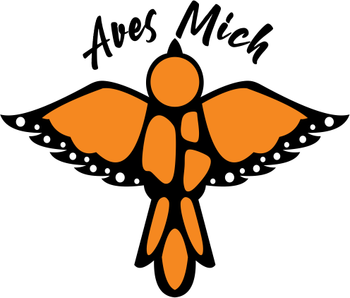 |
AvesMich | Morelia, Michoacán | 🔗 |
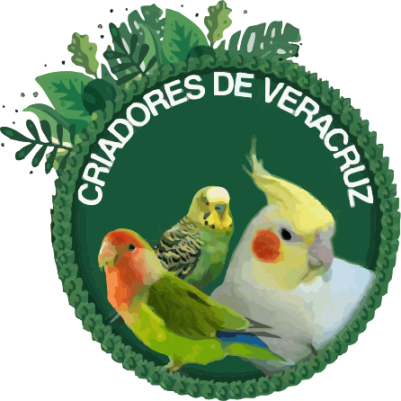 |
Criadores de Veracruz | Veracruz Centro, Veracruz | 🔗 |
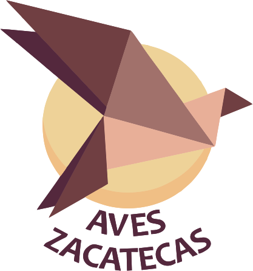 |
Aves Zacatecas | Zacatecas | 🔗 |
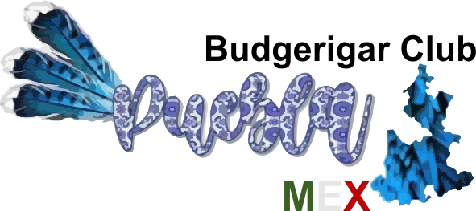 |
Budgerigar Club Puebla | Puebla | 🔗 |
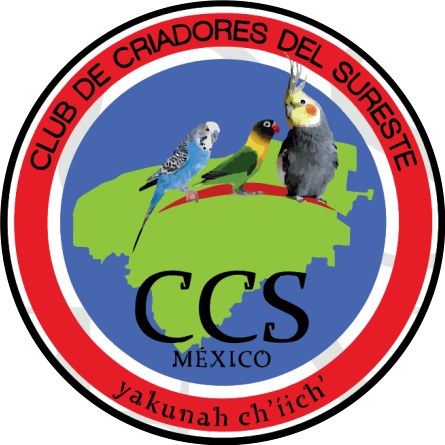 |
Club de Criadores del Sureste (CCS) | Yucatán | 🔗 |
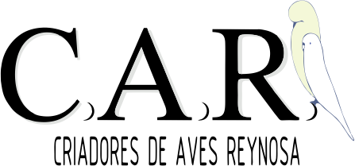 |
Criadores de Aves de Reynosa (CAR) | Reynosa, Tamaulipas | 🔗 |
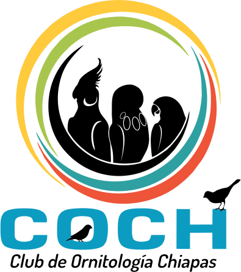 |
Club Ornitologico de Chiapas (COCH) | Tuxtla Gutiérrez, Chiapas | 🔗 |
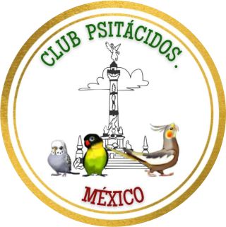 |
Club Psitacidos México (CPM) | Ciudad de México | 🔗 |
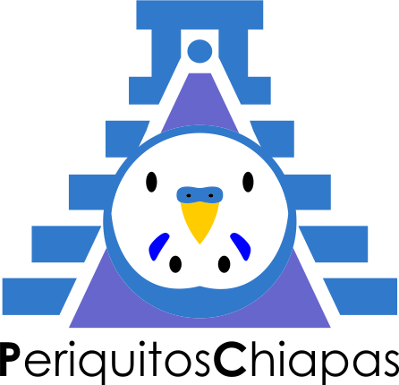 |
Periquitos Chiapas | Chiapas | 🔗 |
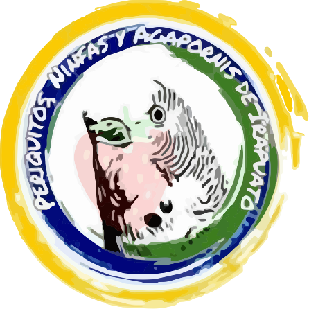 |
Periquitos, Ninfas y Agapornis de Irapuato | Irapuato, Guanajuato | 🔗 |
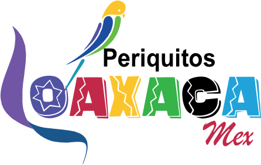 |
Periquitos Oaxaca | Oaxaca | 🔗 |
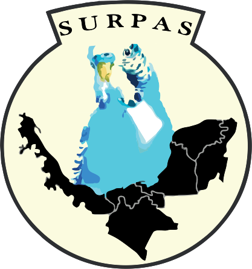 |
Sociedad Unida Por La Reproducción Del Periquito Australiano Del Sureste (SURPAS) | Sureste de México | 🔗 |
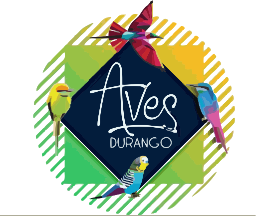 |
Aves Durango | Durango | 🔗 |
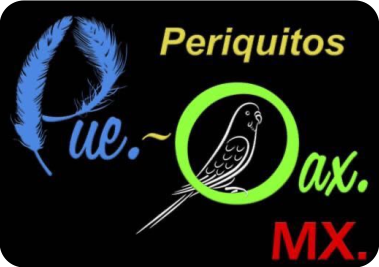 |
Periquitos Puebla Oaxaca | Puebla - Oaxaca | 🔗 |